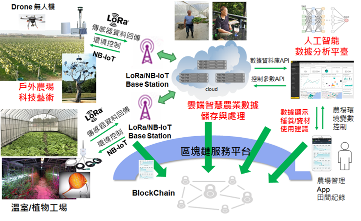

本分項的任務重點方向包含智慧農業與智慧城市。 在「智慧農業」方面，台灣農業較屬於小面積耕地的小型農業，與歐美大陸的大面積耕作屬性有極大之差異性，加上目前面臨極度缺工以及年齡老化問題造成農業發展上的困境，尤其近年來全球氣候變遷大，許多傳統的農作經驗越來越失準，如何依靠智慧科技尤其是人工智慧物聯網 (AIoT) 的技術來協助台灣甚至全球農業發展升級是刻不容緩的議題。 三年來我們透過執行科技部的計畫 (CPS 智慧農業計畫以及 LPWAN產學小聯盟計畫) 投入資源發展運用 AIoT 物聯網與人工智慧技術來提供智慧農業的解決方案，已經累積若干重要關鍵技術，包含 (1) IoT 感應器數據收集與長距離低功耗傳輸技術 (LoRaWAN/NB-IoT) (2) 人工智慧智動化環境偵測與澆水/照光控制技術 (3) 利用人工智慧技術提供作物的品質分級分類技術 (4) 農業達人資料庫之建立 (5) 物聯網數據分析平台與農場管理 App 等等。 